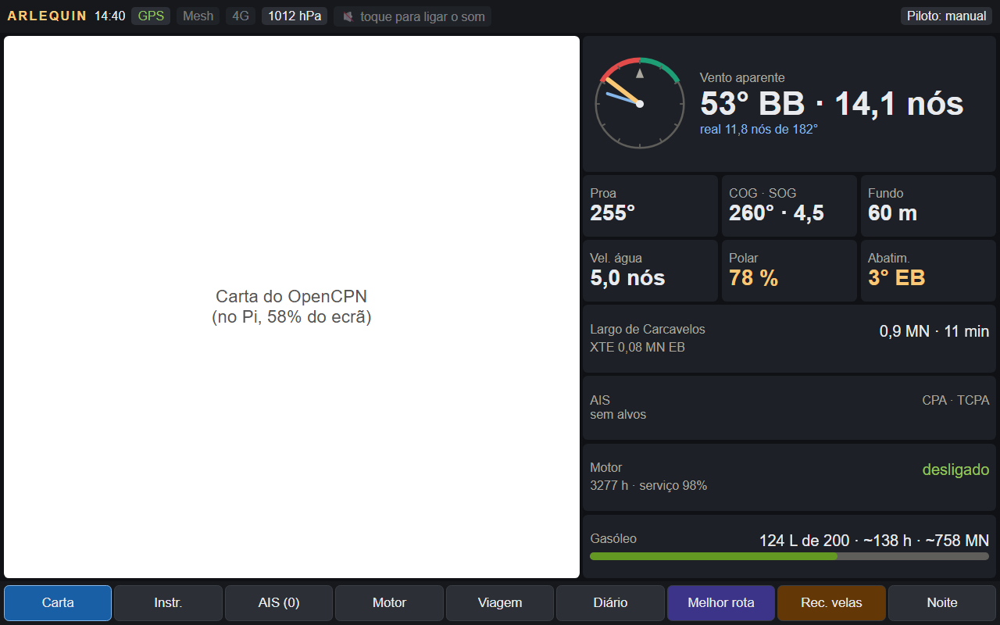
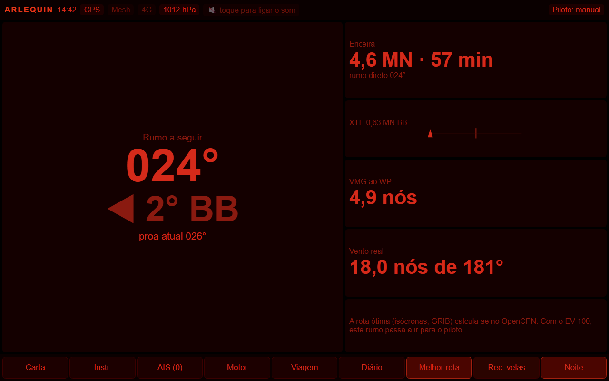
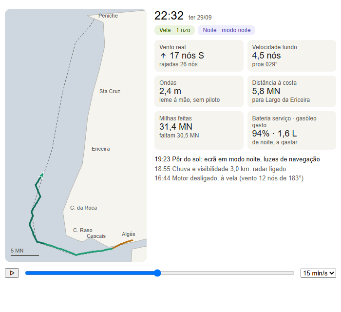

Documento de desenho para opinião · 29/09/2026 · ainda não está construído, é a proposta
Porque te mando isto. Quero a tua opinião antes de o construir. Sobretudo sobre
segurança (as regras da secção 5) e sobre se isto me ajuda de verdade no mar ou só complica.
No fim há 6 perguntas concretas para ti.
O contexto em 1 minuto
O barco. O Arlequin é um Jeanneau Melody 34, um veleiro de cruzeiro dos anos 80, com 10,4 m e motor Volvo de 20 cv.
Está em Peniche e eu vivo em Lisboa, por isso faço muitas vezes a passagem Lisboa ↔ Peniche: cerca de 60 milhas
(110 km), 12 a 15 horas, na costa aberta do Atlântico, a passar pelos cabos Raso e da Roca.
A situação. Navego muitas vezes sozinho, e o barco ainda não tem piloto automático a funcionar.
Por isso é sempre eu ao leme, às vezes de noite, e é aí que um erro de decisão custa caro.
O que já está feito (e testado no portátil). Um computador de bordo (Raspberry Pi 5) junta os dados de todos
os instrumentos: vento, GPS, velocidade, profundidade, bússola, motor, baterias, gasóleo, água e AIS (navios à volta).
Tem um ecrã tátil junto ao leme com 9 páginas: carta, instrumentos, AIS, motor, viagem, diário, melhor rota,
velas e noite. Também dá alarmes (bateria, motor, colisão, fugas de gasóleo) e manda-me mensagens no telemóvel
quando o barco está sozinho no porto.
O que falta, e é o que este documento propõe. Um botão "Calcular melhor rota". Carrego nele e o sistema
olha para tudo (os instrumentos agora, a previsão do tempo, o mar, a costa, o estado do barco e se vou sozinho)
e responde: por onde ir, a que horas, e se devo ir de todo, com os avisos e as precauções para aquela viagem.
E uma AI que aprende com o meu barco a cada saída, para as previsões serem as do Arlequin comigo ao leme,
e não as de um barco teórico.
A regra de ouro. O sistema aconselha, não decide. Posso sempre carregar em "Sair agora mesmo assim"
e ele dá-me a melhor forma de o fazer.

O ecrã do leme hoje (de dia): a carta à esquerda, os instrumentos à direita.

A página "Melhor rota" de hoje, em modo noite: só diz o rumo a seguir. A rota em si tem de ser feita à mão.
1. O que me levou a isto: uma simulação real
Para testar o sistema simulei uma passagem de Algés (Lisboa) a Peniche, com partida hoje às 15:32, com a previsão
do tempo real de hoje, sem piloto automático e com o sistema todo ligado. A simulação faz o barco "navegar" minuto a
minuto: vento, ondas, maré no Tejo, quando rizar (reduzir a vela), quando ligar o motor, noite, chuva e baterias.
Resultado da simulação: rota por fora (a ~5 MN da costa), verde à vela, laranja a motor, mais escuro de noite. À direita: vento, velocidade e ondas ao longo da viagem.
O que a simulação mostrou: 14,3 h de viagem, das quais 10,4 h de noite. O vento chega aos 18 nós com
rajadas de 27 e ondas de 2,6 m, em popa (vento por trás), o que sozinho e sem piloto é cansativo e exige atenção constante.
Chuva ao anoitecer, o vento morre por volta da meia-noite, e chegada a Peniche às 05:47, ainda de noite.
Amanhã, pelo contrário, está calmo o dia todo.
Em palavras simples: fui eu que tive de olhar para os gráficos e concluir "hoje não, amanhã sim". A ideia é o sistema fazer essa análise sozinho, em segundos, no barco, sempre que eu pedir.
Porquê? a simulação também apanhou dois erros reais no sistema: um alarme falso de "já podes desligar o motor" à saída do porto, e uma rota que passava a 250 m da costa em Carcavelos. Simular antes de navegar funciona, e é a base do que proponho.

Um fotograma da simulação animada: às 22:32 o barco vai à vela com 1 rizo, de noite, a 5,8 MN da costa, com 31 milhas feitas.
2. Visão geral: 4 peças
Como as 4 peças se ligam.
Peça
O que faz
Em palavras simples
1 · Caixa negra
Grava todos os dados de todos os instrumentos, desde o primeiro dia
Como a caixa negra de um avião: a memória de tudo o que o barco já viveu
2 · AI
Aprende com esses dados como o barco anda, onde a previsão falha e quanto gasta
Conhecer o barco como um velejador experiente o conhece depois de anos
3 · Melhor rota
Simula ~24 alternativas, aplica as regras de segurança e escolhe
Um navegador que pensa em todas as opções antes de dar um conselho
4 · Ecrã
Mostra o resultado, dá os avisos durante a viagem e a lista de precauções
O que eu vejo e ouço ao leme
Porquê? separar em peças quer dizer que, se uma falhar, as outras continuam. A AI aprende no porto (é pesado), mas a rota funciona sempre, mesmo que a AI esteja parada: usa o último conhecimento bom ou os dados de fábrica do barco.
3. Peça 1: caixa negra
Grava no disco do computador de bordo (SSD de 256 GB), desde o primeiro dia do sistema:
tudo o que passa no sistema: cada leitura de cada instrumento, os cálculos, os alarmes e os navios do AIS. Com isto consigo "reviver" qualquer saída minuto a minuto;
uma tabela resumida para a AI: uma linha a cada 10 segundos, com vento, ângulo, velocidade, ondas, inclinação do barco, velas, motor, e a previsão que havia para aquele sítio e hora;
cada previsão do tempo descarregada, para depois se comparar com o que aconteceu;
um resumo por saída: milhas, horas à vela e a motor, gasóleo e energia.
As velas têm de ser eu a dizer. Nenhum sensor sabe se tenho rizos ou quanto da vela de proa está enrolada.
Por isso a página "Velas" ganha botões grandes (grande: inteira, 1 rizo, 2 rizos; genoa: 100%, 70%, 50%). Toco quando mudo.
Se me esquecer e o vento mudar muito, lembra-me.
Exemplo. uma saída de 14 h gera cerca de 50 MB, e parado quase nada. Os 256 GB chegam para anos. Se um dia chegar aos 80%, os dados mais antigos passam para o meu portátil e só são apagados do barco depois de confirmados, ficheiro a ficheiro. Nada se apaga sozinho.
Porquê?desde o primeiro dia e sem apagar nada, porque cada saída que não se grava é conhecimento perdido para sempre. Dados de teste marcados como "simulado", porque a simulação desta página não pode ensinar a AI: seria o barco a aprender com uma viagem inventada. A cópia chega ao portátil pelo Tailscale, uma rede privada: quando estou a bordo ponho o computador na rede do telemóvel e os dados vêm para casa, sem abrir portas na internet.
4. Peça 2: a AI que aprende com o barco
Três "modelos" que aprendem com a tabela da caixa negra:
Modelo
Aprende
Para quê
Velocidade
quanto o Arlequin anda de verdade com cada vento, ângulo, ondas e velas, comigo ao leme
horas de chegada certas; saber quando compensa o motor
Vento
em quanto a previsão do tempo falha, por zona, direção e hora
corrigir a previsão (ex.: "na Roca com Norte há sempre mais 25%")
Consumo
gasóleo por hora conforme a rotação e o mar
saber se o gasóleo chega, com margem
Exemplo ilustrativo (números inventados, para explicar): a polar de origem é a teoria. A AI aprende que, com 15 nós, a 60° do vento o barco anda 5,6 nós em vez de 6,5, porque tem casco dos anos 80, velas velhas e vai um homem sozinho ao leme. A faixa é a margem de incerteza.
Em palavras simples: uma "polar" é a tabela da velocidade de um veleiro para cada vento e ângulo. A de fábrica é otimista (barco novo, tripulação de regata). A AI vai substituindo a teoria pela realidade, célula a célula, à medida que eu navego.
Como aprende sem aprender asneiras
Só aprende com navegação estável: 2 minutos com rumo firme, sem manobras, longe do porto, sem sensores com avaria e sem dados simulados.
Treina sozinho no porto, com o motor parado há 1 hora, ou quando carrego em "Treinar agora".
Testa-se com a última saída, que fica de fora do treino. O modelo novo só é usado se acertar melhor do que o anterior.
Guarda todas as versões. Voltar atrás é um toque.
Tem limites de sanidade: por exemplo, nunca prevê uma velocidade abaixo de 40% ou acima de 120% da polar.
O teste é sempre com a saída mais recente, que a AI nunca viu.
Mistura gradual: com poucos dados a AI pesa pouco e manda a polar de origem. Com 2 h de dados numa situação (por exemplo, 14–16 nós a 45–60°), passa a mandar a AI nessa situação. Assim, as primeiras saídas nunca estragam as previsões.
Porquê?LightGBM (árvores de decisão) e não uma rede neural. Com dezenas de horas de dados, e não milhares, as redes neurais decoram ruído. As árvores aprendem depressa, treinam em segundos no computador de bordo e deixam ver o que pesou. Testar com a última saída, e não com linhas ao acaso, porque linhas de 10 s seguidas são quase iguais: o teste pareceria perfeito e no mar falhava. Margem pessimista/provável/otimista, porque "chegas entre as 17:40 e as 19:10" é mais honesto e mais útil do que uma hora falsamente exata.
Limite importante: a AI não mexe nas regras de segurança. Dá números à rota, mas o que é seguro ou não é decidido por regras fixas que eu escolhi (secção 5). Uma coisa que aprendeu com meia dúzia de viagens não pode decidir se é seguro sair.
5. Peça 3: como se calcula a melhor rota
Passo 1: junta os dados
De onde
O quê
Instrumentos, agora
posição, rumo, velocidade, vento e rajadas (e como mudaram na última meia hora), inclinação, barómetro (a subir ou a descer), profundidade, velas
Barco
gasóleo, baterias, água, alarmes do motor, navios à volta
Previsão (Open-Meteo)
vento, chuva, visibilidade, ondas, corrente e maré, para 48 h. Sem rede usa a última e diz de quando é
Terra
costa real (OpenStreetMap), zonas a evitar (baixios da barra do Tejo, Berlengas, "autoestrada" dos navios na Roca), entradas dos portos
Eu
destino, se vou sozinho ou acompanhado, distância mínima à costa (5 milhas)
Passo 2: inventa alternativas e simula cada uma
3 × 4 × 2 = 24 alternativas, cada uma simulada do início ao fim como a da secção 1. Menos de 1 segundo cada no Pi.
Porquê?alternativas "de velejador" em vez de um otimizador matemático puro (isócronas). Cada proposta é uma coisa que um velejador faria, por exemplo "por fora a 5 milhas, a partir às 15h", e dá para explicar porque ganhou. Os otimizadores dão rotas ótimas no papel, cheias de ziguezagues que sozinho ao leme não fazem sentido.
Passo 3: regras de segurança (fixas, escolhidas por mim)
Regra
O que acontece
Porquê
Passa por terra, baixios ou pela "autoestrada" dos navios
excluída sempre
não é uma rota possível
Mais perto da costa do que 5 milhas (fora das entradas)
excluída
margem para avarias, sono ou uma rajada que obrigue a desviar
Chega com gasóleo < 40 L ou bateria < 50% no cenário pessimista
excluída
nunca contar com o cenário bom para ter reservas
Vento médio > 22 nós, rajadas > 30, ondas > 3 m
"não recomendada sozinho"
limites de um homem sozinho, sem piloto, num barco de 10 m
Mais de 8 h seguidas ao leme
"não recomendada sozinho"
o cansaço é o maior risco de quem navega sozinho
Chegada de noite a um porto que não conheço
"não recomendada sozinho"
entradas de noite, sem as conhecer, são onde acontecem os acidentes
Passo 4: escolhe, com um "custo" que pesa o risco
Cada alternativa recebe um custo em "horas equivalentes": horas de viagem, mais 0,25 × horas à espera de partir,
mais 1,5 × horas de noite, mais as horas ao leme sozinho, mais penalizações por rajadas acima de 20 nós, ondas acima de 2 m
e horas contra o vento. Ganha a de menor custo.
Exemplo com os números reais de 29/09: partir já custa 48,9; esperar por amanhã custa 29,9, mesmo contando as 16 h de espera. A noite e as rajadas pesam muito.
Porquê?não escolher pela hora de chegada. Por esse critério, partir já ganharia sempre, porque chega mais cedo. O custo faz com que esperar ganhe quando poupa mais risco do que tempo, que foi exatamente a conclusão a que cheguei a olhar para a simulação.
Passo 5: o veredicto
Veredicto
Quando
Segue
a melhor parte agora e está dentro dos limites
Espera até às HH:MM
a melhor parte mais tarde (melhora o tempo, ou evita a noite)
Não recomendado sozinho
todas passam algum limite. Mesmo assim mostra a melhor
Volta ou abriga-te em X
já estou no mar, piorou, e há um abrigo que está melhor do que continuar
Questão em aberto (ainda por decidir). Sem piloto automático, a passagem Lisboa–Peniche passa sempre das 8 h ao leme, mesmo a motor e com o mar calmo. Com a regra como está, dá sempre "não recomendado sozinho", que é o que aparece na maquete da secção 6. É a mensagem honesta, mas pode tornar-se um aviso que se ignora. As alternativas são contar a metade as horas a motor em calma, ou subir o limite. Gostava da tua opinião aqui.
O botão "Sair agora mesmo assim"
A decisão é minha. Se eu decidir sair contra o conselho, o sistema recalcula só com partida imediata e dá a
melhor forma de o fazer: reforça as precauções e junta pontos de desistência.
Exemplo. saída às 15:32 de 29/09 contra o conselho. Os pontos de desistência seriam do género: "até às 17:50, ao largo de Cascais, voltas à marina de Cascais em 1 h"; "até às 19:30, no Cabo Raso, Cascais fica a 1,5 h com o vento de través"; "depois do Cabo da Roca, o abrigo mais perto é Peniche; a Ericeira não serve com esta ondulação". (Ilustrativo.)
Porquê? quando se sai contra o conselho, a informação que mais protege é até quando ainda se pode voltar atrás.
Durante a viagem
A cada 30 minutos compara o que está a acontecer com o plano. Se o vento se afastar mais de 30% do previsto, ou se a chegada atrasar mais de 30 min, avisa "recalcula". Nunca muda a rota sozinho.
6. Peça 4: o que eu vejo no ecrã
Na página "Melhor rota" carrego em Calcular, escolho o destino (ou a rota que já tenho no programa de cartas) e digo só eu / 2 ou mais.
Em 5 a 10 segundos mostra o que está a juntar: "previsão das 14:38, corrigida pela AI · 24 alternativas".
Aparece o resultado: o veredicto, as 3 melhores lado a lado, os avisos e as precauções.
Ativar esta rota manda-a para a carta, e o ecrã passa ao modo leme: o rumo em grande, quando virar, e "próximo: rizar às 22:50 (daqui a 25 min)".
Maquete do resultado (ilustrativa, com números aproximados da passagem Algés → Peniche simulada a 29/09):
Algés → Peniche · só eu · previsão das 14:38 (há 20 min) · AI v0007 (3 h aprendidas)Melhor rota
Não recomendado sozinho · se fores, a melhor é amanhã às 08:00
Sem piloto, todas passam das 8 h ao leme. Hoje: 10 h de noite em popa com rajadas de 27 nós. Amanhã: calma, quase tudo de dia, a motor.
Melhor das 3
Por fora 5 MN · amanhã 08:00 · motor
20:15
entre 19:40 e 21:00
61 MN · 12,2 h motor
noite 0,9 h · leme 12,2 h
vento 6 · rajadas 9 · ondas 1,4 m
gasóleo 18 L · bateria mín. 93%
Por fora 5 MN · agora · vela+motor
05:47
entre 05:10 e 06:40
61 MN · 7,5 h vela · 6,7 h motor
noite 10,4 h · leme 14,3 h
vento 18 · rajadas 27 · ondas 2,6 m
gasóleo 8,7 L · bateria mín. 92%
Por fora 8 MN · agora · vela+motor
06:20
entre 05:40 e 07:20
65 MN · 7,8 h vela · 7,0 h motor
noite 10,9 h · leme 14,8 h
vento 19 · rajadas 28 · ondas 2,8 m
gasóleo 9,1 L · bateria mín. 92%
Avisos (se partires agora)
16:40 rizar antes da barra: rajadas 24
18:55 chuva, visibilidade 3 km: radar
19:23 pôr do sol: luzes, arnês, comer
00:30 o vento cai: prender a retranca, motor
05:47 chegada de noite a Peniche
Precauções antes de sair
☐ arnês e linha de vida montada
☐ retenida na retranca (popa)
☐ VHF no 16, telemóvel carregado
☐ plano deixado a alguém em terra
☐ estado da barra (Capitania)
Ver no mapaEnviar plano por TelegramSair agora mesmo assimAtivar esta rota
Avisos durante a viagem
30 min antes de cada momento do plano: rizar, chuva (ligar o radar), mudança de vento ou frente, pôr do sol (luzes, arnês, comer), cambar, chegada de noite.
Sozinho, de 3 em 3 h: "come e bebe". Parece banal, mas é das primeiras coisas que se esquecem.
Quando a realidade foge ao plano: "vento medido 22 nós, previsto 15: a previsão está a falhar por baixo".
Barómetro a cair mais de 3 hPa em 3 h: o tempo pode piorar antes do previsto.
Gasóleo ou bateria a caminho da reserva antes do destino.
Precauções: a lista muda com a viagem
Sempre
Conforme a viagem
VHF no canal 16 · telemóvel carregado · plano deixado a alguém em terra · estado da barra (Capitania)
noite ou sozinho → arnês e linha de vida · vento por trás → retenida na retranca · chuva → radar e luzes · rajadas > 20 → rizo feito antes de sair · o vento vai cair → prender a retranca, motor pronto
Porquê?a lista não bloqueia nada. É uma ajuda de memória, não um polícia. "Enviar plano por Telegram" manda o destino, a rota e a hora de chegada provável a alguém em terra: é a precaução mais simples e a que mais ajuda um salvamento.
Quando falta alguma coisa
Falha
O que faz
Sem internet
usa a última previsão e mostra a idade. Com mais de 12 h, aviso grande: "confia nos instrumentos e no barómetro"
AI sem dados ou avariada
usa a polar de fábrica e diz isso
Sem GPS
não calcula e explica porquê
7. O que isto NÃO é (limites honestos)
Não é uma carta náutica oficial. A rota proposta confirma-se sempre na carta antes de a ativar.
A previsão pode falhar. A AI corrige os erros habituais, não os imprevistos. Por isso os avisos comparam sempre a previsão com o que os instrumentos medem.
A AI precisa de horas de mar. Nas primeiras saídas vale pouco mais do que a polar de fábrica, e o ecrã diz isso.
Os instrumentos têm de estar calibrados (vento, bússola, velocidade). Dados errados ensinam coisas erradas. É por isso que há os filtros e o teste com a última saída.
Não substitui o bom senso nem o piloto automático. Ajuda a decidir melhor e mais cedo.
Como vai ser testado antes de ir para o mar
Cada peça tem testes automáticos. A AI é testada com dados inventados em que se sabe a resposta certa. A rota é testada com a previsão real de 29/09 gravada, e tem de dar "não recomendado sozinho" e mostrar os pontos de desistência. O ecrã é verificado de dia e de noite. Só depois vai para o barco.
8. Perguntas para ti
Os limites para "não recomendado sozinho" (22 nós de vento, rajadas 30, ondas 3 m, 8 h ao leme) parecem-te bem para um barco destes?
As 8 h ao leme sem piloto: manter a regra dura, contar a metade o motor em calma, ou subir o limite? (secção 5)
5 milhas da costa por defeito: exagero, ou até pouco nos cabos?
Falta alguma precaução ou algum aviso que tu terias?
Há alguma zona a evitar ou algum porto de abrigo entre Lisboa e a Nazaré que eu deva meter?
No geral: isto ajuda de verdade no mar, ou há alguma parte que achas que vai atrapalhar?
Glossário
Termo
Significado
Nó / milha (MN)
milha náutica = 1852 m; 1 nó = 1 milha por hora (1,85 km/h)
Rizar / rizo
reduzir a área da vela grande quando há muito vento
Popa / través / contra o vento
vento por trás / de lado / de frente (à frente só se avança em ziguezague)
Cambar / virar
mudar de bordo com o vento por trás / pela frente
Retenida
cabo que impede a retranca de atravessar o barco com violência quando o vento vem por trás
Polar
tabela da velocidade do barco para cada vento e ângulo
AIS
sistema que mostra os navios à volta, com rumo e velocidade
Separador de tráfego
"autoestrada" marcada no mar para os navios grandes (ao largo do Cabo da Roca)
P10 / P50 / P90
cenário pessimista / provável / otimista
LightGBM
método de aprendizagem automática com árvores de decisão, bom quando há poucos dados
Tailscale
rede privada que liga o portátil ao computador do barco pela internet, com segurança